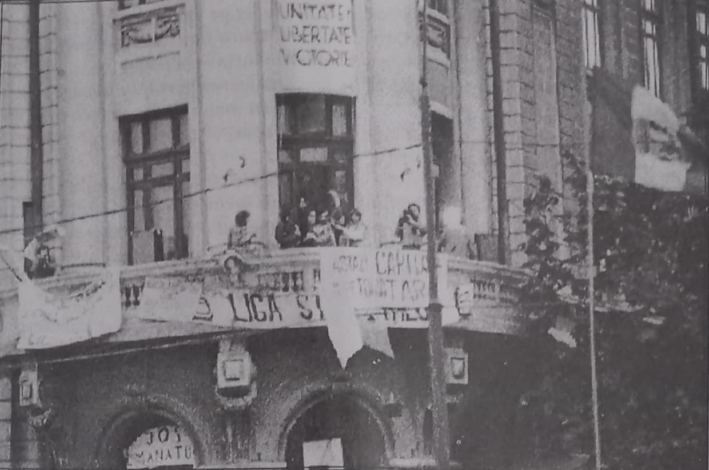
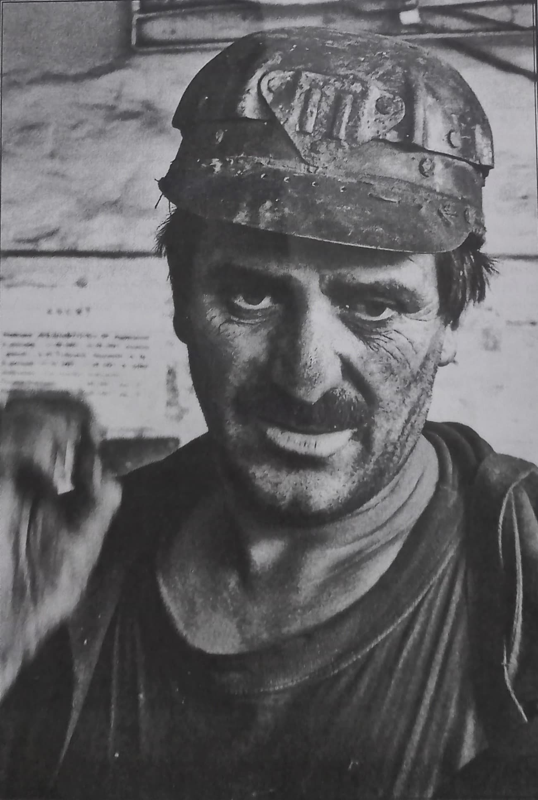

Despre un loc și nu numai: Piața Universității
De curând am realizat că, despre lucrurile pe care le credeam cunoscute și despre care vorbeam ca despre niște puncte comune, trebuie să vorbesc cu totul altfel. Fiindcă ele nu mai sunt nici cunoscute, nici puncte comune pentru cei de astăzi. Situația mi-a creat un oarecare discomfort, fiindcă a trebuit să admit că vremea s-a așternut atât peste ele cât și peste mine însumi.
Astfel, nu mai pot vorbi despre Piața Universității, fără ca să risc să fiu nu neînțeles ci privit ca un om care spune lucruri ciudate, bizare — deoarece Piața Universității a redevenit în 20 de ani (poate firesc?) piața universității, adică locul acelea care se află în centru Bucureștiului și nimic mai mult. Așa încât, cred că e nevoie să povestesc de la capăt o poveste de acum 20 de ani. Apoi să-i dezleg înțelesurile, așa cum le-am dezlegat eu, de atunci și până acum. M-am întrebat cum aș putea să o numesc?…
Niște golani - Piața Universității
Piața Universității a fost manifestația de protest față de continuarea comunismului în România, după căderea regimului Ceaușescu. În decembrie 1989, sub pretextul schimbării regimului comunist, liniile inferioare din partidul comunist român și-au asasinat conducătorii și au pus mâna pe frâiele statului român. Cu alte cuvinte au dat o lovitură de stat — în care au fost uciși mai mulți români, tocmai pentru a da impresia unei manifestații spontane, firești… —, iar apoi au legitimat acțiunea lor prin câteva cuvinte de tipul: democrație, libertate, … Despre lovitura de stat din 1989 s-au spus mare parte din lucrurile care erau de spus, fără a ajunge la afirmarea adevărului. S-a vorbit mult mai puțin — iat astăzi pare de tot uitat — despre încercarea de a redresa statul român, din punct de vedere politic nepartinic, prin manifestația de protest din Piața Universității. Mai precis, la câteva luni după ce o bandă teroristă condusă de Ion Iliescu a dat lovitura de stat, legitimându-se cu lupta împotriva comunismului, s-a vădit că de fapt ei înșiși erau comuniști, însă de o factură mult mai josnică. Studenții din Universitatea București au înțeles că nu trebuie acceptat acest lucru și că România trebuia să scape de această boală care îi secătuise sufletul: comunismul. Astfel, platoul din apropierea universității a fost blocat. Intersecția de la universitate a fost ocupată de studenți, îngrădită și denumită „zonă liberă de neocomunism”. În foarte scurt timp au început să sosească noi protestatari — în mare parte intelectuali. Pentru cei care se adunau lucrurile erau clare: atât Ion Iliescu cât și ceilalți complici la crimele, făcute în numele unei revoluții inexistente, erau bolșevici „de școală nouă”; ei îl înlăturaseră pe Ceaușescu din alte motive decât dărâmarea comunismului sau redobândirea libertății poporului român. Protestatarii — denumiți mai târziu piețarii - cereau ca la conducerea statului român să nu fie nici un activist comunist sau colaborator al regimului Ceaușescu — în acest fel încercând să dea sens și legitimitate evenimentelor din 89. Lucrul era cu atât mai puțin probabil cu cât autorii loviturii de star erau îndrumați și susținuți din exteriorul României — erau așadar doar niște executanți ai unui complot internațional, care viza sfârșitul perioadei de comunism patriotic (în același timp neromânesc) și trecerea la dezmembrarea statului. Iar atunci când vrei să distrugi, să dizolvi, să pulverizezi un stat — ne învață istoria modernă - faci apel la organismele verificate ca foarte eficiente în această treabă și care sunt străine de organismul social, adică folosești elementele alogene. Pentru români, cele mai distrugătoare au fost și sunt din nou, din decembrie 89, țiganii și evreii — cei prin care a fost impus și comunismul la noi în țară. Fără să cercetăm prea în amănunt, spunem doar că cei mai mulți dintre conducătorii României de după 89 fac parte din una din aceste două familii. Intenția protestatarilor era să deconspire pentru toți românii aceste lucruri: nu numai că n-a fost nici o revoluție, dar comunismul și-a schimbat înfățișarea — Ion Iliescu a denumit el însuși noul regim ca fiind „comunism cu față umană” — și se anunță cu mult mai nociv decât cel din regimul dărâmat, actorii fiind neromâni. „Zona liberă de neocomunism”, adică Piața Universității urmărea să se extindă, să devină un exemplu pentru toată țara. Asta era în capul celor care au ocupat balconul universității de deasupra pieței. Părea că se poate. Firește că astăzi vedem clar că era o utopie — nu exista nici o alternativă organizată de conducere a statului român, iar comunitatea internațională, care, după cum am mai spus, era participant direct la lovitura de stat dată de elementele antiromânești și neromânești din partidul comunist, nu avea cum să agreeze o astfel de direcție ca cea pe care pornise protestul.

Fără însă a ține seama de aceste lucruri, pe care noi le vedem astăzi dar care le erau străine celor de atunci, manifestația din Piața Universității rezista de zile și săptămâni. Era incredibil.
Ceea ce este foarte interesant, pentru tot parcursul desfășurării manifestației de protest Piața Universității, este modul în care se protesta. Aceasta particularizează manifestația despre care vorbim și, pe de altă parte, arată profilul celor care au participat la protest. Ce se petrecea într-o zi de protest? De dimineață veneau un număr de studenți care asigurau curățenia și ordinea în „zona liberă de neocomunism”. În general, până în jurul orei 17 nu era o activitate anume, în afara ținerii permanenței protestului. Începând cu ora 17 piața se umplea — piețarii veneau de la serviciu — și începea să vuiască de lozinci anticomuniste. Din balconul universității se rosteau discursuri, se recita sau se cânta. Se citeau telegramele de susținere a protestului, venite din toată lumea — fie de la români ca Eugen Ionescu, Emil Cioran, etc, fie de la străinii care erau impresionați atât de inițiativa cât și de tenacitatea și de rezistența celor care participau la protest. Oameni politici care au vorbit de la balcon au fost puțini. Aproape în fiecare seară cântau Valeriu Sterian, Doctor Barbi, Pațurcă. Nu a lipsit nici Gheorghe Zamfir. Pe peretele Facultății de Arhitectură — pe care era scris în limba chineză un mesaj de solidaritate cu mișcarea studenților chinezi de la Tien An Men, reprimată sângeros de guvernanți - se făceau proiecții de imagini documentare. Din când în când, întrerupând orice alt discurs, se striga la unison împotriva comunismului și pentru libertatea românilor. Apoi continua discursul sau muzica. Starea din piață era mai curând destinsă, de bine, de „acasă”, decât încrâncenată ca la alte manifestații. Cei din piață nu-i urau pe neo-bolșevici ci, mai curând îi iubeau pe români — problema era cum să facă bine românilor și nu cum să facă rău ticăloșilor de la putere. Așa încât, afirmația lui Ion Iliescu, că în piață at fi, „elemente declasate” ale societății, a fost în măsură să îndârjească foarte tare pe protestatari. Sâmbăta și duminica programul pieței era de dimineață până seara. De multe ori veneau părinți și predicau sau se rugau cu cei din piață. Încet-încet piața tindea să devină locul unei comunități speciale, locul românilor care nu voiau să accepte, în continuare, o clasă conducătoare obedientă față de puterile străine — de orice sorginte ar fi fost — și profund antiromânească; piața tindea să devină locul oamenilor liberi, a oamenilor care credeau în destinul poporului român. Mai multe televiziuni străine transmiteau cu simpatie fragmente de la manifestație, ținând opinia publică internațională la curent cu acest fenomen. Dar Piața Universității era doar o piață, care conta prea puțin în fața unei întregi țări la care nu putea ajunge mesajul corect — toate mass-media erau ale puterii (acum toate mass-media sunt ale puterilor).
***
Pentru conspiratorii deveniți acum conducătorii recunoscuți de către comunitatea internațională, acest fenomen devenise din ce în ce mai supărător. Manifestația aceasta era cu totul neașteptată și se părea, foarte rezistentă. În țară, prin mass-media se transmiteau, după cum ușor se poate bănui, niște minciuni incredibile: se vorbea despre legionari, neolegionari, elemente depravate ale societății, pe scurt — cu expresia lui Ion Iliescu: „niște golani”. Doar că, în ciuda acestor etichete, intelectualii din piața universității rezistau mai departe în protestul lor. Este momentul în care neoconducătorii neocomuniști au comis mai multe greșeli, despre care nu vom vorbi în locul acesta. Pentru a se legitima politic trebuiau organizate în grabă „alegeri libere și democratice”, care urmau să arate — cum de altfel au și făcut — „voința poporului”; mai clar, că poporul i-a ales pe ei în fruntea statului și nu ei înșiși au parvenit la conducerea statului, prin crimă. Manifestația, în aceste condiții, deranja din ce în ce mai mult. Astfel că Ion Ilici Iliescu, Petre Roman (Neulander), Silviu Brucan (Saul Brukner) și ceilalți „români” sadea, care salvau țara cu forța, au fost nevoiți să găsească o rezolvare pentru suprimarea manifestației. Și, desigur, luptători ilegaliști ai comunismului în România, obișnuiți cu metodele specifice ale sistemului din care făceau parte, au găsit soluția: să cheme „oamenii muncii” care, în mod spontan, „să pună la punct” această dezordine. „Oamenii muncii” cei mai manevrabili și cei mai capabili de „mânie proletară” erau minerii — fiindcă în București guvernanții mai chemaseră oameni ai muncii de la diferite fabrici; oameni ai muncii care se cam dumiriseră case era treaba și care nu mai răspundeau comenzilor bolșevicilor neocomuniști; în altă ordine de idei, minerii erau ideali pentru astfel de lucruri și fiindcă nu înțelegeau nimic din tot ce se petrecea. Așadar, au fost „mobilizați” minerii din mai multe bazine de minerit — cei mai mulți din Valea Jiului și de la securitate — organizați și aduși în București pentru a face ordine.
Întrebările pe care mi le-am pus toți anii aceștia — am greșit? am evaluat greșit situația din 89 și din 90? trebuia scăpat atunci de comunism? erau noii conducători slugi ale comunității internaționale?; toate aceste întrebări și multe altele au primit, pe parcursul timpului, răspunsuri din ce în ce mai clare.
Preludiu la Mineriadă
Au fost mai multe încercări ale puterii de a intimida sau de a speria protestatarii cu scopul de a pune sfârșit manifestației. De fiecare dată aceste acțiuni au eșuat. Pe 13 iunie dimineața poliția, scutierii au intrat în forță în piață și au scos baricadele. Fiind dimineață, n-au întâmpinat o mare rezistență. Totodată a fost reținut de poliție Marian Munteanu, liderul Ligii Studenților și unul dintre liderii pieței. Aceste două măsuri luate de către autorități au fost suficiente pentru a-i mobiliza pe toți piețarii care și-au lăsat serviciul sau studiul pentru examen și au venit în piață restabilind zona liberă de neocomunism. Reacția a fost foarte puternică. Atât de puternică încât nu a mai putut fi controlată. Marian Munteanu a fost lăsat liber. A urcat în balconul universității și a făcut apel la liniște și non-violență. Prea târziu. Era cea mai bună împrejurare pentru serviciile secrete să degenereze întreaga mișcare și să capete astfel justificare pentru folosirea forței extreme cu scopul de a suprima piața, adică de a „salva democrația”. Grupuri de „cetățeni” au mers la televiziune în care au aruncat cu sticle incendiare și în sediul căreia au pătruns. Alți „cetățeni” au aruncat cu sticle incendiare în Ministerul de Interne. Flăcările au cuprins sediul Ministerului de Interne, însă la etajele superioare, unde nici campionul la aruncarea ciocanului n-ar fi putut arunca cu o sticlă incendiară — s-a creat și folosit împrejurarea pentru a se arde o mare parte din arhiva compromițătoare a ministerului de interne. S-au auzit focuri de armă. Totul scăpase de sub control: demonstrația pașnică a fost manipulată, în așa fel încât s-a transformat într-o manifestare anarhică — fără cap și fără coadă. Forțele de ordine care își începuseră ziua demonstrându-și forța, acum erau inexistente. Nici o împotrivire la intrarea manifestanților în televiziune, nici o reacție față de dezordinea care domnea în capitală: garda fusese lăsată jos, din ordin. Lângă universitate au fost puse, ca baricadă, autobuze ale RATB-ului. Autobuzul de lângă peretele universității a luat foc — mai târziu a fost scoasă la lumină conversația ministrului de interne cu Iliescu, în care generalul îi raporta președintelui că a executat ordinul primit și a incendiat autobuzele. Spre seară — suntem pe 13 iunie — lucrurile păreau cumva că s-au potolit. Mai puțin la universitate, unde un grup de piețari continuau să țină piața ca zonă liberă de neocomunism. Seara târziu însă, s-a comis marea greșeală de către grupul de complotiști care erau îngroziți de frică că vor pierde puterea și ca urmare vor trebui să dea socoteală pentru multe crime comise în acea scurtă perioadă — de la lovitura de stat până în acel moment. S-a vorbit foarte puțin despre acest episod care este ca inexistent din punct de vedere oficial: folosirea tab-urilor împotriva populației civile. În dreptul Cercului Militar Central, pe bulevard s-a făcut un baraj de mașini de război cu țevile îndreptate înspre grupul care se încăpățâna să rămână în piață. Senzația era că scopul acestor mașini aparținând ministerului de interne — sau ministerului apărării naționale — era să intimideze. Doar că la un moment dat, atunci când întunericul acoperise totul, tab-urile au început să tragă. Groaza cea mai mare s-a așternut peste protestatari: au căzut primii împușcați. Perplexitatea s-a amestecat cu groaza, în fața certitudinii. Protestatarii au început să fugă: democrația criminală mai fusese restabilită încă o dată, de aceiași salvatori ai României care mai practicaseră această operă de salvare și la impunerea comunismului - și tot față în față cu studenții. Demonstrația s-a stins în stradă, însă represiunea de abia de acum începea. Minerii erau pe drum spre București - chemați de Ion Iliescu și grupul complotiștilor înverșunați împotriva românilor, care nu voiau să înțeleagă și să accepte că în decembrie fusese doar un carnaval macabru.
Mineriada - reprimarea sângeroasă a unei manifestații pașnice
Liga studenților a hotărât, ca urmare a evenimentelor petrecute în acea zi de 13 iunie — incendierea autobuzului de lângă universitate, auto-incendierea ministerului de interne, precum multe alte provocări — să asigure o permanență de pază în interiorul universității. Plana teama că pot fi provocate daune de către autorități, pentru ca mai apoi să fie puse în seama studenților. Astfel că un grup de studenți a rămas peste noapte în universitate — de altfel același lucru mai fusese făcut doar cu câteva luni în urmă în timpul lupelor de stradă din decembrie, ianuarie. Pe de altă parte, se primise semnal clar că spre dimineață vor sosi minerii în capitală — studenții erau hotărâți să discute cu ei și să le explice cum stau lucrurile: că ei au fost dezinformați și au fost chemați pentru a crea vrajbă socială și a rezolva în acest fel problema de rezistență a guvernanților neocomuniști.
Minerii au sosit într-adevăr spre dimineață în București, dar nu pentru a înțelege actele petrecute în ziua precedentă sau pentru a discuta cu studenții. Minerii au venit ca o instanță absolută — ei erau cei în măsură să pună lucrurile la locurile lor; deși, în cea mai mare parte a lor, erau analfabeți și sărmani și probabil n-au priceput nici până în ziua de astăzi care este semnificația actelor lor. Ei au fost întâmpinați de Ion Iliescu, Petre Roman, Gelu Voican Voiculescu și ceilalți complotiști și au fost asigurați că era vorba despre forțe legionare care puneau în pericol democrația noastră cea plăpândă; au fost îndrumați în câteva puncte — în primul rând în Piața Universității — unde li s-a cerut să restabilească liniștea și ordinea prin forță. Iliescu a mai spus multe aberații pentru a-i convinge pe mineri că era timpul să folosească topoarele pentru a salva România — cum ar fi că pe 13 iunie au defilat pe bulevardele Bucureștiului legionari îmbrăcați în verde cu steaguri negre. Dar, după cum ne amintim, în piață nu mai era nimic — gloanțele guvernanților alogeni trase în studenții români restabiliseră ordinea. Cu toate acestea s-au creat grupuri de mineri împreună cu securiști îmbrăcați în salopete noi - pentru a părea mineri - și soldați de la ministerul de interne înarmați. Astfel organizați au pornit, îndrumați grijuliu spre punctele fierbinți ale capitalei. Firește că n-au găsit nimic în stradă. Acest lucru nu i-a împiedicat să pătrundă în Universitate și să măcelărească studenții care păzeau Universitatea; același lucru s-a întâmplat și la Facultatea de Arhitectură. Și pentru că bătuseră atâta amar de drum până la București, minerii trebuiau să rezolve ceva; așa că s-au apucat să bată civili pe stradă: fie că aveau barbă, fie că aveau ochelari — minerii tăbărau pe ei, împreună cu securiștii și soldații de la interne și-i zdrobeau în bătaie (cuvântul de ordine era „moarte intelectualilor”; au fost pancarte și s-a scandat aceasta în timpul măcelului; lucru lesne de înțeles dacă ne gândim că obsesia și complexul guvernanților era tocmai cel de inferioritate față de adevărata intelectualitate a țării). Așa că mulți oameni care nu aveau nimic cu demonstrația și care se îndreptau spre serviciu au ajuns fie la spital fie la morgă. Emisiunile televiziunii din acea perioadă ar trebui cunoscute și astăzi, pentru a putea vedea că este real, că e vorba despre crimă organizată și că această crimă stă la baza clasei politice care guvernează România, de atunci și până acum. Aceste manifestări ale urii împotriva românilor s-au desfășurat atât în ziua de 14 iunie cât și în 15 iunie. Au fost multe victime — numărul lor nu este cunoscut decât aproximativ.
La sfârșitul acțiunii de măcelărire a populației civile din capitală, care a fost în fapt o colaborare guvern-mineri, Ion Iliescu le-a mulțumit celor din urmă pentru că „au dat dovadă de spirit civic” și au restabilit ordinea și democrația. Nu cred că este cineva care să considere că ceea ce s-a întâmplat în acele zile este altceva decât terorism de stat. Ca o garanție a faptului că această crimă îndreptată împotriva poporului și a statului român continuă și astăzi avem aceeași clasă politică — mai mult: aceleași persoane! Cu deosebirea că astăzi nu mai fac parte din același partid — între timp s-au schimbat: se numesc liberali, social-democrați, social-democrați-liberali, conservatori șamd. Nimeni nu a dat socoteală, nimeni nu a plătit — au fost scoși câțiva țapi ispășitori, de ochii opiniei publice internaționale.

După 20 de ani - Este nevoie, mai mult ca oricând, de Piața Universității
Suntem o țară de mineri
Ceea ce este poate cel mai fascinant la populația României este lipsa de memorie. Românii se trezesc, din când în când, cu inocența unui pui de găină care descoperă lumea: agresați parcă de realitatea pe care o întrezăresc la intervale nedeterminate de timp, în împrejurări legate în general de digestie. Manifestarea românilor în aceste clipe de luciditate buimacă și amnezică este de obicei puternic emoțională. Ei se trezesc — deodată! — în criză. Și, firesc, nu sunt de acord! Sigur că e vorba de criza digestiei, adică economică, adică despre mâncare se vorbește. Reacția la această criză este fără îndoială definitorie pentru români: îl înjură pe primul ieșit în cale, care este responsabil de toată situația. Pentru că el, românul a dormit până acum — nu e chiar somnul de veci, ci mai curând somnul de ghiveci. Comunismul a reușit să-i arate că nu există Hristos și atunci la ce ar fi bună trezvia? Ca urmare, somn ușor!
***
Care a fost reacția românului la criza existențială prin care a trecut întreg poporul român, prin întemnițarea și uciderea celor mai buni fii ai săi, timp de zeci de ani? N-a fost nici o reacție — comuniștii s-au îngrijit și o mare perioadă a fost de mâncare, adică n-a fost nici o criză, nici o problemă. Mai mult, urmașii comuniștilor care au luptat împotriva românilor sunt cei pe care românul îi alege să conducă… poporul! Fiindcă, românii au uitat sau au dormit, nefiind criză alimentară. Care a fost reacția la criza generată de scuiparea lui Hristos prin ateism, atât în timpul comuniștilor cât și acum? Nici una. Care criză? Doar e de mâncate și românul poate dormi liniștit.
***
Comunismul a transformat poporul român într-un mare luptător pentru cel mai mare castron cu mâncare. Este realitatea: colectivizarea făcută de comuniștii de până acum 20 de ani nu se referă la pământ decât în subsidiar. Fără Dumnezeu suntem o adunătură de animale; se pare că nici acest lucru nu-l mai supără pe român. Comuniștii, părinți ai celor de astăzi, au colectivizat sufletul poporului român! Așa că românul nici nu a observat că suntem în criză morală și politică de zeci de ani; el nu înțelege că economia României nu este în criză acum, decât ca urmare a cârdășiei de 20 de ani a tuturor conducătorilor țării, care îndeplinesc niște ordine de afară și mai fură și ei tot ce prind, cârdășie care are ca scop distrugerea statului român — cine să creadă acest lucru? doar e adevărat; și cum să creadă românul lucruri adevărate?; fiindcă românul a uitat cum au venit ei la putere și dacă își mai aduce cineva aminte (vag) că sunt tot aceiași de acum 20 de ani; românul nu poate înțelege că nu există nici o forță străină care să-i vrea binele, să-i dea de pomană; el nu înțelege că nici nu ar trebui să fie astfel, fiindcă el, românul deși a uitat din ce neam vine, totuși nu se află întâmplător pe lume; sau poate nici nu mai poate să-și amintească aceste lucruri, după ce s-au schimbat comuniștii uniunii sovietice cu comuniștii uniuni europene; românul nu înțelege că el însuși a devenit minerul de serviciu prin care, cu forța căruia, cu complicitatea căruia se distruge acum poporul din care face parte — el nici nu mai știe; tot ce vrea acum românul e mult ghiveci, de mâncare, de băgat în gură, să mănânce să se plimbe cu mașina și dacă s-ar putea să stea într-o casă mare și, ca urmare el, românul nu înțelege — după cum am mai spus — de ce nu se întâmplă acestea; de fapt, a aflat de curând: fiindcă e criză economică, din cauza guvernanților și a președintelui!
Firește că e criză economică, dar aceasta e ultima manifestare, este ultimul act pentru poporul român; criza economică care a început acum 20 de ani are înaintea ei criza morală, criza culturală, criza politică — crize cate împlinesc și ele o vârstă respectabilă. Dar pe care românul nu le-a observat și nici acum nu le vede și nu înțelege ce legătură au toate acestea cu mâncarea — fiindcă el are ca scop esențial în viața lui mâncarea și „să trăiască bine”! Cine spune românului că lucrurile stau altfel este cel puțin idealist, poet sau mai pe scurt: e un prost sau mai rău, un extremist.
Iar cine îndrăznește să-i tulbure somnul are de-a face cu minerii. Cuvântul fundamental este liniștea somnului. Așa că dacă vrei să îndrepți lucrurile, dacă cumva îndrăznești să vezi și o altă criză decât cea generată de maț, atunci ai de a face cu românul, adică cu minerul. Este realitatea. Degeaba îi arăți românului că de 20 de ani se distruge sistematic și după program economia țării: el îi va înjura pe cei care sunt acum la putere și va face grevă să îi aducă la putere pe cei care au distrus economia înaintea celor de astăzi. Pare că s-a slobozit nebunia în poporul român; e ca într-un coșmar: bolșevicii condamnă bolșevismul și apoi își râd în barbă de cât de înapoiați sunt românii. Abia plecați de la putere, după ce au jefuit și au distrus economia țării — cu un efort supraomenesc — liberalii strigă împotriva hoților de la guvernul de acum! E delirant. Pare că nu mai există soluție, că românii vor cu tot dinadinsul să dispară din istorie ca popor, pentru a se transforma într-o populație sătulă de mâncare.
Cea mai mare instanță pentru român este fondul monetar internațional — cu varianta banca mondială. Desigur, fiindcă de acolo poate să vină mâncarea — în imaginația lui. Toată lumea poate fi vinovată de ceea ce se petrece acum, numai Fondul Monetar Internațional sau Banca Mondială, nu! În mintea românului ei sunt prietenii noștri. În realitate aceste organisme financiare sunt cele care au dictat chiar clasa conducătoare de la București, tocmai pentru a ruina și scoate la vânzare țara. Nu e nici o figură de stil — de altfel, nu suntem singura și nici prima țară care este pe punctul de a dispărea. În mod oficial, suntem anunțați că România are „datorii suverane”! deci, România nu mai este suverană, ci are datorii suverane. Este foarte clar că așa stau lucrurile. Iar dacă vrem să le schimbăm e mult de lucru. Singura scăpare pentru român este să încerce să se asculte, să poată mai departe să înțeleagă și să acționeze. Toate aceste lucruri nu se pot decât dacă îl rugăm pe Dumnezeu să ne dea putere, și dacă ne ostenim pentru aceasta. Ca în oricare moment al istoriei, până la cel final, există ieșire, soluție; dar mai întâi trebuie înțeleasă problema, care nu este doar criza financiară. Nici nu s-ar fi ajuns la această criză dacă depășeam criza morală și mai apoi criza politică. Dacă înțelegeam sensul teologic al istoriei. Drumul de zeci de ani este greșit, dar de 20 de ani este evident pentru oricine că nu o doctrină este greșită, ci întreg drumul duce în ghena istoriei spre ratarea mântuirii. Trebuie abandonat acest drum pe care nu are importanță dacă există Dumnezeu sau nu; trebuie mers pe drumul pe care îl avem noi ca neam. Politica trebuie făcută de oameni care trăiesc în biserică și pentru a crea condiții poporului credincios să meargă pe drumul mântuirii. Apoi mai ne ajută și Dumnezeu. Fiindcă noi, acum, facem totul spre hula lui Dumnezeu și spre batjocorirea poporului, iar la sfârșit, trântim, cu patos un Doamne ajută! Trebuie schimbat cu totul drumul — până nu e prea târziu.
Comentarii